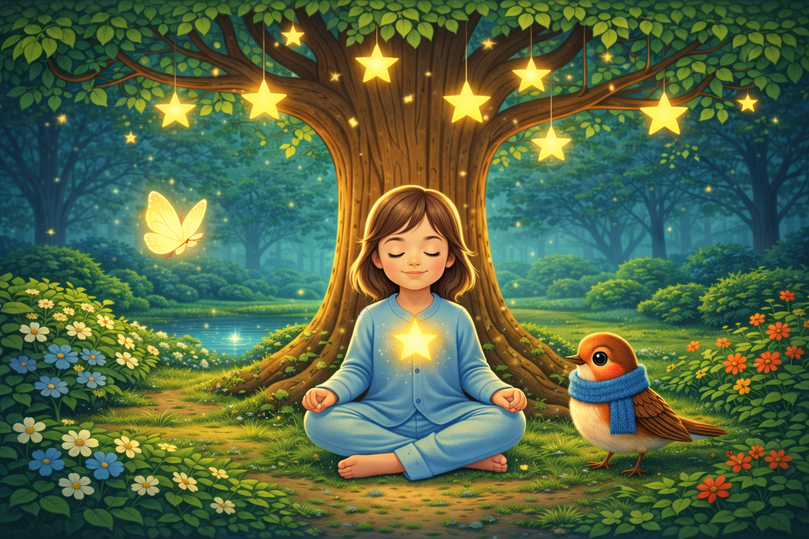

Sanfte Einschlaf-Meditation & Traumreise für Kinder – um loszulassen, Gefühle zu sortieren und geborgen einzuschlafen.
In dieser liebevollen Einschlafreise begleitet dich ein leuchtender Schmetterling auf einem hellen Lichtweg in den geheimnisvollen Garten der Gefühle. Dort triffst du Milo, den kleinen Vogel mit dem weichen Schal. Gemeinsam entdeckt ihr den großen Sternenbaum – mit warm leuchtenden Sternen in seinen Ästen.
Unter dem Sternenbaum darf alles ruhig werden: Gedanken dürfen ziehen, Gefühle dürfen einfach da sein. Zum Schluss bekommst du deinen eigenen Herzstern, der in dir weiterleuchtet – und dich daran erinnert, dass du wichtig bist und genau richtig, so wie du bist.
Direktlinks: Spotify · Apple Podcasts · YouTube
Besonders geeignet für Kinder von ca. 5–9 Jahren – und für alle Großen, die noch träumen können ✨
Bitte nur im Liegen oder gemütlichen Sitzen anhören – diese Meditation macht sehr müde 🌙
Deine Andrea – Lache & Lebe 💛